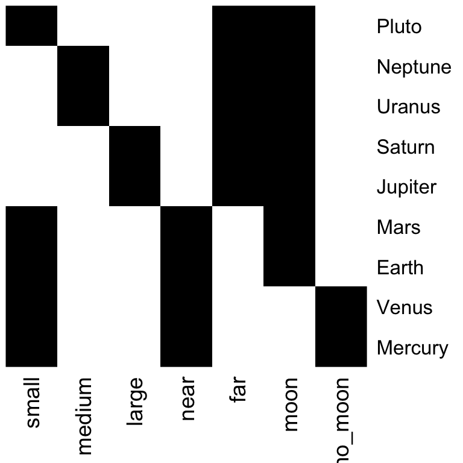

Capítulo 8 Introducción a igraph
# Instalar la primera vez - descomentar
#install.packages("igraph")
#install.packages("igraphdata")
library(igraph)
library(igraphdata)
# Importar la red de datasets ya establecidos: igraphdata
# Limpia la memoria - Cuidado - borra todas las variables
rm(list=ls())
#Lista de datasets de redes de nodos en igraph
# data(package="igraphdata")
# El paquete tiene un conjunto de datasets
# Carga data set y vemos que contiene
#Red social entre miembros de club de karate de universidad
data(karate,package="igraphdata")
plot(karate)
8.1 Acceder a elementos de grado
IGRAPH 6f42903 D-W- 81 817 – + attr: Type (g/c), Date (g/c), Citation (g/c), Author (g/c), Group | (v/n), weight (e/n) + edges from 6f42903: [1] 57->52 76->42 12->69 43->34 28->47 58->51 7->29 40->71 5->37 48->55 [11] 6->58 21-> 8 28->69 43->21 67->58 65->42 5->67 52->75 37->64 4->36 [21] 12->49 19->46 37-> 9 74->36 62-> 1 15-> 2 72->49 46->62 2->29 40->12 [31] 22->29 71->69 4-> 3 37->69 5-> 6 77->13 23->49 52->35 20->14 62->70 [41] 34->35 76->72 7->42 37->42 51->80 38->45 62->64 36->53 62->77 17->61 [51] 7->68 46->29 44->53 18->58 12->16 72->42 52->32 58->21 38->17 15->51 [61] 22-> 7 22->69 5->13 29-> 2 77->12 37->35 18->46 10->71 22->47 20->19 + … omitted several edges + 81/81 vertices, from 6f42903: [1] 1 2 3 4 5 6 7 8 9 10 11 12 13 14 15 16 17 18 19 20 21 22 23 24 25 [26] 26 27 28 29 30 31 32 33 34 35 36 37 38 39 40 41 42 43 44 45 46 47 48 49 50 [51] 51 52 53 54 55 56 57 58 59 60 61 62 63 64 65 66 67 68 69 70 71 72 73 74 75 [76] 76 77 78 79 80 81 + 817/817 edges from 6f42903: [1] 57->52 76->42 12->69 43->34 28->47 58->51 7->29 40->71 5->37 48->55 [11] 6->58 21-> 8 28->69 43->21 67->58 65->42 5->67 52->75 37->64 4->36 [21] 12->49 19->46 37-> 9 74->36 62-> 1 15-> 2 72->49 46->62 2->29 40->12 [31] 22->29 71->69 4-> 3 37->69 5-> 6 77->13 23->49 52->35 20->14 62->70 [41] 34->35 76->72 7->42 37->42 51->80 38->45 62->64 36->53 62->77 17->61 [51] 7->68 46->29 44->53 18->58 12->16 72->42 52->32 58->21 38->17 15->51 [61] 22-> 7 22->69 5->13 29-> 2 77->12 37->35 18->46 10->71 22->47 20->19 [71] 19->31 68->13 49->69 30->63 5->49 53->75 62->57 73->81 29->69 71->40 [81] 19->58 49->42 37-> 5 18-> 2 20->80 75->53 15->54 76->58 40->23 5->12 [91] 20->54 6->47 51->14 78-> 4 52->49 29->55 27->35 66-> 6 21->29 4->61 + … omitted several edges + 81/81 vertices, from 6f42903: [1] 1 2 3 4 5 6 7 8 9 10 11 12 13 14 15 16 17 18 19 20 21 22 23 24 25 [26] 26 27 28 29 30 31 32 33 34 35 36 37 38 39 40 41 42 43 44 45 46 47 48 49 50 [51] 51 52 53 54 55 56 57 58 59 60 61 62 63 64 65 66 67 68 69 70 71 72 73 74 75 [76] 76 77 78 79 80 81 Class ‘igraph’ hidden list of 10 $ : num 81 $ : logi TRUE $ : num [1:817] 56 75 11 42 27 57 6 39 4 47 … $ : num [1:817] 51 41 68 33 46 50 28 70 36 54 … $ : num [1:817] 580 411 719 376 569 215 533 620 527 592 … $ : num [1:817] 241 433 238 352 258 274 115 24 263 25 … $ : num [1:82] 0 6 23 27 37 65 74 91 93 101 … $ : num [1:82] 0 9 28 32 40 50 58 76 82 87 … $ :List of 4 ..$ : num [1:3] 1 0 1 ..$ :List of 4 .. ..$ Type : chr “TSPE” .. ..$ Date : chr “Mon Mar 19 21:56:02 2007” .. ..$ Citation: chr “Nepusz T., Petroczi A., Negyessy L., Bazso F.: Fuzzy communities and the concept of bridgeness in complex netwo”| truncated .. ..$ Author : chr “Nepusz T., Petroczi A., Negyessy L., Bazso F.” ..$ :List of 1 .. ..$ Group: num [1:81] 3 1 3 3 2 2 2 1 3 2 … ..$ :List of 1 .. ..$ weight: num [1:817] 4 14 4 4 10 2 6 2 4 4 … $ :<environment: 0x7fd238c45348> [1] 4 14 4 4 10 2 [1] 3 1 3 3 2 2
8.2 Construir/Modificar un grafo
Añadir arcos a un grafo vacío:
# Un grafo dirigido vacío
g <- make_empty_graph(n = 0, directed = TRUE)
gIGRAPH 1741e1f D— 0 0 – + edges from 1741e1f:
g <- g + vertices(c("A","B","C"))
gIGRAPH cca8d1d DN– 3 0 – + attr: name (v/c) + edges from cca8d1d (vertex names):
# Arcos: A to C , B to C
g <- g + edges(c("A","C", "B","C"))
gIGRAPH bee5cbf DN– 3 2 – + attr: name (v/c) + edges from bee5cbf (vertex names): [1] A->C B->C
# Eliminar arco A
g <- g - V(g)["A"]
gIGRAPH 46da006 DN– 2 1 – + attr: name (v/c) + edge from 46da006 (vertex names): [1] B->C
# Eliminará todos los arcos conectados con ALista de arcos: graph() and get.edgelist():
# Un grafo dirigido vacío
# graph() id desde 1.
g1 <- graph( c(1,2, 1,3, 2,3, 3,4 ));g1IGRAPH b58a28f D— 4 4 – + edges from b58a28f: [1] 1->2 1->3 2->3 3->4
summary(g1)IGRAPH b58a28f D— 4 4 –
plot(g1)# El parámetro "directed" a FALSE para
# grafos no dirigidos.
g2 <- graph( c(1,2, 1,3, 2,3, 3,4 , 3, 5, 1, 3), directed=FALSE); g2 IGRAPH 8d2aea6 U— 5 6 – + edges from 8d2aea6: [1] 1–2 1–3 2–3 3–4 3–5 1–3
summary(g2)IGRAPH 8d2aea6 U— 5 6 –
plot(g2)#Obtener la lista de arcos a partir de un grafo
edgelist<-get.edgelist(g2) ; edgelist [,1] [,2][1,] 1 2 [2,] 1 3 [3,] 2 3 [4,] 3 4 [5,] 3 5 [6,] 1 3
edgelist <- as_edgelist(g2) ; edgelist [,1] [,2][1,] 1 2 [2,] 1 3 [3,] 2 3 [4,] 3 4 [5,] 3 5 [6,] 1 3
# Obtener el grafo a partir de la lista de arcos
g3<-graph( t(edgelist)); g3; plot(g3)IGRAPH 6bbb295 D— 5 6 – + edges from 6bbb295: [1] 1->2 1->3 2->3 3->4 3->5 1->3
g3<-graph( edgelist); g3; plot(g3)IGRAPH 4ad317e D— 5 6 – + edges from 4ad317e: [1] 1->1 2->3 3->1 2->3 3->4 5->3
# algunos parámetros de plot
plot(g3,
vertex.color="green",
edge.arrow.size=0.5,
vertex.size=25,
edge.curved=0.5,
layout_as_star=TRUE)
Matrices de adyacencia: graph.adjacency(), get.adjacency()
adjm_u<-matrix(
c(0, 1, 0, 0, 1, 0,
1, 0, 1, 0, 1, 0,
0, 1, 0, 1, 0, 0,
0, 0, 1, 0, 1, 1,
1, 1, 0, 1, 0, 0,
0, 0, 0, 1, 0, 0),
nrow=6,
ncol=6,
byrow = TRUE)
#grafo a partir de matriz de adyacencia
g_adj_u <- graph.adjacency(adjm_u, mode="undirected")
plot(g_adj_u)# Matriz de adyacencia a partir de grafo
A <- get.adjacency(g_adj_u); A6 x 6 sparse Matrix of class “dgCMatrix”
[1,] . 1 . . 1 . [2,] 1 . 1 . 1 . [3,] . 1 . 1 . . [4,] . . 1 . 1 1 [5,] 1 1 . 1 . . [6,] . . . 1 . .
A <- as_adjacency_matrix(g_adj_u, sparse = FALSE)
A [,1] [,2] [,3] [,4] [,5] [,6][1,] 0 1 0 0 1 0 [2,] 1 0 1 0 1 0 [3,] 0 1 0 1 0 0 [4,] 0 0 1 0 1 1 [5,] 1 1 0 1 0 0 [6,] 0 0 0 1 0 0
Grafo a partir de data frame
# Primero, crear el data frame
node1 = c("Ella", "Tu", "El"); node2 = c("El", "Ella", "Tu")
weight = c(10, -2, 3)
df = data.frame(node1, node2, weight); dfnode1 node2 weight 1 Ella El 10 2 Tu Ella -2 3 El Tu 3
# Crear el grafo
g <- graph.data.frame(df, directed=FALSE); gIGRAPH bf4acb4 UNW- 3 3 – + attr: name (v/c), weight (e/n) + edges from bf4acb4 (vertex names): [1] Ella–El Ella–Tu Tu –El
plot(g)
# Si se conocen los vértices
# g <- graph.data.frame(df, vertices=listvertices, directed=FALSE);g
# Obtener los nombres de los nodos
V(g)$name [1] “Ella” “Tu” “El”
# Obtener los pesos de los arcos
E(g)$weight [1] 10 -2 3
Grafo a partir de literales
#?graph_from_literal
g <- graph_from_literal(A--C, A-+D, C-+A, , D-+C)
gIGRAPH a8b1955 DN– 4 3 – + attr: name (v/c) + edges from a8b1955 (vertex names): [1] A->D C->A D->C
plot(g)#IGRAPH DN-- 4 4 --
#+ attr: name (v/c)
#+ edges (vertex names):
#[1] A->D D->C D->B B->A
G3 <-graph_from_literal(A-B, B -+C)
plot(G3)
G3 <-graph_from_literal(A-B, B -C)
plot(G3)
grafo aleatorio